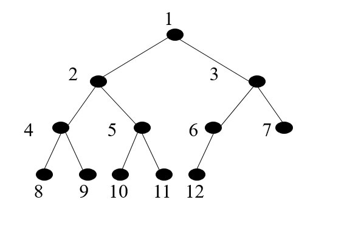

Day02笔记
作业讲解
链表作业题一
题目描述 + 试题解析
1【1】题目描述2输入一个链表，输出该链表中倒数第 k 个节点34【2】试题解析5可将链表中的每一个元素保存到列表中，在列表中寻找倒数第 k 个元素代码实现
x1"""2输入一个链表，输出该链表中倒数第 k 个节点3思路:41、链表只能从头到尾遍历,从尾到头遍历存在难度52、从头到尾遍历,将节点数据添加到一个列表中63、利用列表的下标索引取出对应的节点数据7"""8class Node:9"""节点类"""10def __init__(self, value):11self.value = value12self.next = None1314class Solution:15def get_k_node(self, head, k):16# 1.把链表中节点数据添加到列表中17li = []18cur = head19while cur:20li.append(cur.value)21cur = cur.next22# 2.利用列表的索引取出对应值23if k > len(li):24raise IndexError('list index out of range')2526return li[-k]2728if __name__ == '__main__':29s = Solution()30# 创建链表: 100 -> 200 -> 300 -> None31head = Node(100)32head.next = Node(200)33head.next.next = Node(300)34# 终端1: 20035print(s.get_k_node(head, 2))36# 终端2: list index out of range37print(s.get_k_node(head, 8))
链表作业题二
题目描述 + 试题解析
xxxxxxxxxx61【1】题目描述2输入两个单调递增的链表，输出两个链表合成后的链表，当然我们需要合成后的链表满足单调不减规则34【2】试题解析5a> 比较两个链表的头节点，确认合成后链表的头节点6b> 继续依次比较两个链表元素的大小，将元素小的结点插入到新的链表中，直到一个链 表为空代码实现
xxxxxxxxxx691"""2输入两个单调递增的链表，输出两个链表合成后的链表，当然我们需要合成后的链表满足单调不减规则3思路:41、程序最终返回的是: 合并后的链表的头节点52、先确定新链表的头节点63、互相比较,移动值小的游标7"""8class Node:9"""节点类"""10def __init__(self, value):11self.value = value12self.next = None1314class Solution:15def merge_two_link_list(self, head1, head2):16# 1.确定新链表的头节点17h1 = head118h2 = head219if h1 and h2:20if h1.value >= h2.value:21merge_head = h222h2 = h2.next23else:24merge_head = h125h1 = h1.next26# p即为最终返回的结果27p = merge_head28elif h1:29return h130else:31return h232# 2.遍历两个链表进行比较合并33while h1 and h2:34if h1.value <= h2.value:35merge_head.next = h136h1 = h1.next37else:38merge_head.next = h239h2 = h2.next40# 移动新链表的游标41merge_head = merge_head.next4243# 3.循环结束后,一定有一个游标为None(或者说一定有一个链表遍历完了)44if h2:45merge_head.next = h246elif h1:47merge_head.next = h14849# 4.最终返回新链表的头节点50return p5152if __name__ == '__main__':53s = Solution()54# 链表1: 100 -> 200 -> 300 -> 400 -> None55head1 = Node(100)56head1.next = Node(200)57head1.next.next = Node(300)58head1.next.next.next = Node(400)59# 链表2: 1 -> 200 -> 600 -> 800 -> None60head2 = Node(1)61head2.next = Node(200)62head2.next.next = Node(600)63head2.next.next.next = Node(800)64# 合并65p = s.merge_two_link_list(head1, head2)66# 结果: 1 100 200 200 300 400 600 80067while p:68print(p.value, end=' ')69p = p.next
线性表 - 栈（LIFO)
定义
xxxxxxxxxx11栈是限制在一端进行插入操作和删除操作的线性表（俗称堆栈），允许进行操作的一端称为"栈顶"，另一固定端称为"栈底"，当栈中没有元素时称为"空栈"特点
xxxxxxxxxx21【1】栈只能在一端进行数据操作2【2】栈模型具有后进先出的规律（LIFO）

顺序栈代码实现
xxxxxxxxxx381"""2顺序存储的方式实现栈3思路：41、栈 ：LIFO 后进先出52、设计6列表尾部作为栈顶（入栈、出栈操作）7列表头部作为栈底（不进行任何操作）8"""9class Stack:10def __init__(self):11"""初始化一个空栈"""12self.elems = []1314def is_empty(self):15"""判断栈是否为空栈"""16return self.elems == []1718def push(self, item):19"""入栈: 相当于在链表尾部添加1个元素"""20self.elems.append(item)2122def destack(self):23"""出栈: 相当于在列表尾部弹出1个元素"""24if self.is_empty():25raise Exception('destack from empty stack')26return self.elems.pop()2728if __name__ == '__main__':29s = Stack()30# 栈(栈底->栈顶): 100 200 30031s.push(100)32s.push(200)33s.push(300)34# 终端1: 300 200 100 异常35print(s.destack())36print(s.destack())37print(s.destack())38print(s.destack())链式栈代码实现
xxxxxxxxxx481"""2链式存储方式实现栈3思路：41、栈：LIFO 后进先出52、设计6链表头部作为栈顶（入栈、出栈操作）7链表尾部作为栈底（不进行任何操作）8"""9class Node:10"""节点类"""11def __init__(self, value):12self.value = value13self.next = None1415class LinkListStack:16def __init__(self):17"""初始化一个空栈"""18self.head = None1920def is_empty(self):21"""判断是否为空栈"""22return self.head == None2324def push(self, item):25"""入栈操作: 相当于在链表的头部添加一个节点"""26node = Node(item)27node.next = self.head28self.head = node2930def pop(self):31"""出栈操作: 相当于删除链表头节点"""32if self.is_empty():33raise Exception('pop from empty LinkListStack')34item = self.head.value35self.head = self.head.next3637return item3839if __name__ == '__main__':40s = LinkListStack()41# 栈（栈底->栈顶）：300 200 10042s.push(100)43s.push(200)44s.push(300)45# 终端1: 30046print(s.pop())47# 终端2: False48print(s.is_empty())
线性表 - 队列（FIFO）
定义
xxxxxxxxxx11队列是限制在两端进行插入操作和删除操作的线性表，允许进行存入操作的一端称为"队尾"，允许进行删除操作的一端称为"队头"特点
xxxxxxxxxx211) 队列只能在队头和队尾进行数据操作22) 队列模型具有先进先出规律（FIFO）

顺序队列代码实现
xxxxxxxxxx371"""2顺序存储方式去实现队列模型3思路：41、队列：FIFO 先进先出,队尾负责入队,队头负责出队52、设计：6列表头部作为队头,负责出队7列表尾部作为队尾,负责入队8"""9class Queue:10def __init__(self):11"""初始化一个空队列"""12self.elems = []1314def is_empty(self):15"""判断队列是否为空"""16return self.elems == []1718def enqueue(self, item):19"""队尾入队: append(item)"""20self.elems.append(item)2122def dequeue(self):23"""队头出队: pop(0)"""24if self.is_empty():25raise Exception('dequeue from empty Queue')26return self.elems.pop(0)2728if __name__ == '__main__':29q = Queue()30# 队列: 100 200 30031q.enqueue(100)32q.enqueue(200)33q.enqueue(300)34# 终端1: 10035print(q.dequeue())36# 终端2: False37print(q.is_empty())链式队列代码实现
xxxxxxxxxx571"""2链式存储方式去实现队列3思路：41、队列：FIFO 先进先出52、设计：6链表头部作为队头,负责出队操作7链表尾部作为队尾,负责入队操作8"""9class Node:10def __init__(self, value):11self.value = value12self.next = None1314class LinkListQueue:15def __init__(self):16"""初始化一个空队列"""17self.head = None1819def is_empty(self):20"""判断队列是否为空"""21return self.head == None2223def enqueue(self, item):24"""队尾入队: 相当于在链表尾部添加一个节点"""25node = Node(item)26# 空队列情况27if self.is_empty():28self.head = node29return30# 非空队列31cur = self.head32while cur.next:33cur = cur.next34# 循环结束后,cur一定是指向了原链表尾节点35cur.next = node36node.next = None3738def dequeue(self):39"""队头出队: 相当于删除链表头节点"""40if self.is_empty():41raise Exception('dequeue from empty LinkListQueue')42cur = self.head43# 删除头节点44self.head = self.head.next4546return cur.value4748if __name__ == '__main__':49q = LinkListQueue()50# 队列: 100 200 30051q.enqueue(100)52q.enqueue(200)53q.enqueue(300)54# 终端1: 10055print(q.dequeue())56# 终端2: False57print(q.is_empty())
树形结构
定义
xxxxxxxxxx11树（Tree）是n（n≥0）个节点的有限集合T，它满足两个条件：有且仅有一个特定的称为根（Root）的节点；其余的节点可以分为m（m≥0）个互不相交的有限集合T1、T2、……、Tm，其中每一个集合又是一棵树，并称为其根的子树（Subtree）

基本概念
xxxxxxxxxx151# 1. 树的特点2* 每个节点有零个或者多个子节点3* 没有父节点的节点称为根节点4* 每一个非根节点有且只有一个父节点5* 除了根节点外,每个子节点可以分为多个不相交的子树67# 2. 相关概念81) 节点的度: 一个节点的子树的个数92) 树的度: 一棵树中,最大的节点的度成为树的度103) 叶子节点: 度为0的节点114) 父节点125) 子节点136) 兄弟节点147) 节点的层次: 从根开始定义起,根为第1层158) 深度: 树中节点的最大层次

二叉树
定义
xxxxxxxxxx11二叉树（Binary Tree）是n（n≥0）个节点的有限集合，它或者是空集（n＝0），或者是由一个根节点以及两棵互不相交的、分别称为左子树和右子树的二叉树组成。二叉树与普通有序树不同，二叉树严格区分左孩子和右孩子，即使只有一个子节点也要区分左右

二叉树的分类 - 见图
xxxxxxxxxx111【1】完全二叉树2对于一颗二叉树，假设深度为d，除了d层外，其它各层的节点数均已达到最大值，并且第d层所有节点从左向右连续紧密排列34【2】满二叉树5所有叶节点都在最底层的完全二叉树67【3】二叉排序树('二叉搜索树')8任何一个节点，所有左边的值都会比此节点小，所有右边的值都会比此节点大910【4】平衡二叉树11当且仅当任何节点的两棵子树的高度差不大于1的二叉树二叉树 - 添加元素代码实现
xxxxxxxxxx401"""2二叉树3"""45class Node:6def __init__(self, value):7self.value = value8self.left = None9self.right = None1011class Tree:12def __init__(self, node=None):13"""创建了一棵空树或者是只有树根的树"""14self.root = node1516def add(self, value):17"""在树中添加一个节点"""18node = Node(value)19# 空树情况20if self.root is None:21self.root = node22return2324# 不是空树的情况25node_list = [self.root]26while node_list:27cur = node_list.pop(0)28# 判断左孩子29if cur.left is None:30cur.left = node31return32else:33node_list.append(cur.left)3435# 判断右孩子36if cur.right is None:37cur.right = node38return39else:40node_list.append(cur.right)
广度遍历 - 二叉树
广度遍历 - 代码实现
xxxxxxxxxx181def breadth_travel(self):2"""广度遍历 - 队列思想（即：列表的append()方法 和 pop(0) 方法"""3# 1、空树的情况4if self.root is None:5return6# 2、非空树的情况7node_list = [self.root]8while node_list:9cur = node_list.pop(0)10print(cur.value, end=' ')11# 添加左孩子12if cur.left is not None:13node_list.append(cur.left)14# 添加右孩子15if cur.right is not None:16node_list.append(cur.right)1718print()
深度遍历 - 二叉树
xxxxxxxxxx71【1】遍历2 沿某条搜索路径周游二叉树，对树中的每一个节点访问一次且仅访问一次。34【2】遍历方式5 2.1) 前序遍历： 先访问树根，再访问左子树，最后访问右子树 - 根 左 右6 2.2) 中序遍历： 先访问左子树，再访问树根，最后访问右子树 - 左 根 右7 2.3) 后序遍历： 先访问左子树，再访问右子树，最后访问树根 - 左 右 根

xxxxxxxxxx31【1】前序遍历结果: 1 2 4 8 9 5 10 3 6 72【2】中序遍历结果: 8 4 9 2 10 5 1 6 3 73【3】后序遍历结果: 8 9 4 10 5 2 6 7 3 1深度遍历 - 代码实现
xxxxxxxxxx291# 前序遍历2def pre_travel(self, node):3"""前序遍历 - 根左右"""4if node is None:5return67print(node.value, end=' ')8self.pre_travel(node.left)9self.pre_travel(node.right)1011# 中序遍历12def mid_travel(self, node):13"""中序遍历 - 左根右"""14if node is None:15return1617self.mid_travel(node.left)18print(node.value, end=' ')19self.mid_travel(node.right)2021# 后续遍历22def last_travel(self, node):23"""后序遍历 - 左右根"""24if node is None:25return2627self.last_travel(node.left)28self.last_travel(node.right)29print(node.value, end=' ')二叉树完整代码
xxxxxxxxxx1091"""2python实现二叉树3"""45class Node:6def __init__(self, value):7self.value = value8self.left = None9self.right = None1011class Tree:12def __init__(self, node=None):13"""创建了一棵空树或者是只有树根的树"""14self.root = node1516def add(self, value):17"""在树中添加一个节点"""18node = Node(value)19# 空树情况20if self.root is None:21self.root = node22return2324# 不是空树的情况25node_list = [self.root]26while node_list:27cur = node_list.pop(0)28# 判断左孩子29if cur.left is None:30cur.left = node31return32else:33node_list.append(cur.left)3435# 判断右孩子36if cur.right is None:37cur.right = node38return39else:40node_list.append(cur.right)4142def breadth_travel(self):43"""广度遍历 - 队列思想（即：列表的append()方法 和 pop(0) 方法"""44# 1、空树的情况45if self.root is None:46return47# 2、非空树的情况48node_list = [self.root]49while node_list:50cur = node_list.pop(0)51print(cur.value, end=' ')52# 添加左孩子53if cur.left is not None:54node_list.append(cur.left)55# 添加右孩子56if cur.right is not None:57node_list.append(cur.right)5859print()6061def pre_travel(self, node):62"""前序遍历 - 根左右"""63if node is None:64return6566print(node.value, end=' ')67self.pre_travel(node.left)68self.pre_travel(node.right)6970def mid_travel(self, node):71"""中序遍历 - 左根右"""72if node is None:73return7475self.mid_travel(node.left)76print(node.value, end=' ')77self.mid_travel(node.right)7879def last_travel(self, node):80"""后序遍历 - 左右根"""81if node is None:82return8384self.last_travel(node.left)85self.last_travel(node.right)86print(node.value, end=' ')8788if __name__ == '__main__':89tree = Tree()90tree.add(1)91tree.add(2)92tree.add(3)93tree.add(4)94tree.add(5)95tree.add(6)96tree.add(7)97tree.add(8)98tree.add(9)99tree.add(10)100# 广度遍历：1 2 3 4 5 6 7 8 9 10101tree.breadth_travel()102# 前序遍历：1 2 4 8 9 5 10 3 6 7103tree.pre_travel(tree.root)104print()105# 中序遍历:8 4 9 2 10 5 1 6 3 7106tree.mid_travel(tree.root)107print()108# 后序遍历：8 9 4 10 5 2 6 7 3 1109tree.last_travel(tree.root)